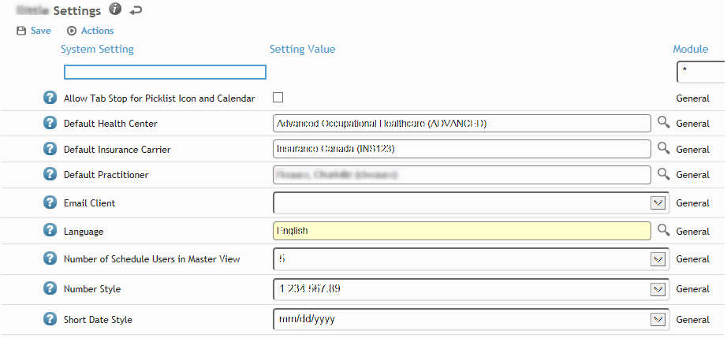

Changing Your System Settings
System settings control Cority’s behavior. Most are “global”, meaning they are set by the administrator for all users. Others are defined as “user” settings, which you can set according to how you want to work with Cority. The administrator may choose to change a global setting to a user setting.
Configuring the system? Watch the System Settings course in Cority Academy (20 mins)
To view the user settings that you can define, click My Settings at the top of the screen.

To see a description of a setting, hover over the help icon beside each setting .
To filter the list of settings, choose a module to view only the settings that apply to that module. “General” settings are used by more than one module.
Settings may require a checkbox selection, selection from a drop-down list, selection from a look-up table, or free text entry. Define the settings as required.
To restore the default settings for your user profile, choose Actions»Restore Profile System Settings.
For details about individual system settings, refer to the Cority System Guide or contact your administrator.
If you do not specify a Default Health Center in your system settings, a module record will use the default health center defined in the form’s layout (see Defining Form Layouts). The health center in data records is the one set in the practitioner’s system settings, not the patient’s.
In the Administrator menu, click System Settings. Of particular note to administrator access:
The Setting Value shown when accessed via the Administrator menu is the global system setting value; this might not be the value used by Cority if the system setting is set to “User” and an individual user has changed the value (in My Settings).
The Global/User column displays whether this system setting is a global setting applied to all users, or a user setting that can be viewed and changed by each user. Some system settings cannot be changed to User; in this case the buttons are disabled.
An administrator can view or modify any user’s system settings. In the Administrator menu, click Users. Select a user record and choose Actions»View System Settings. To return their settings to the default settings assigned to their user profile, when viewing their system settings choose Actions»Restore Profile System Settings.
There are several system settings available that allow an administrative user to broadcast a message to all users; see Broadcasting Messages to Users.